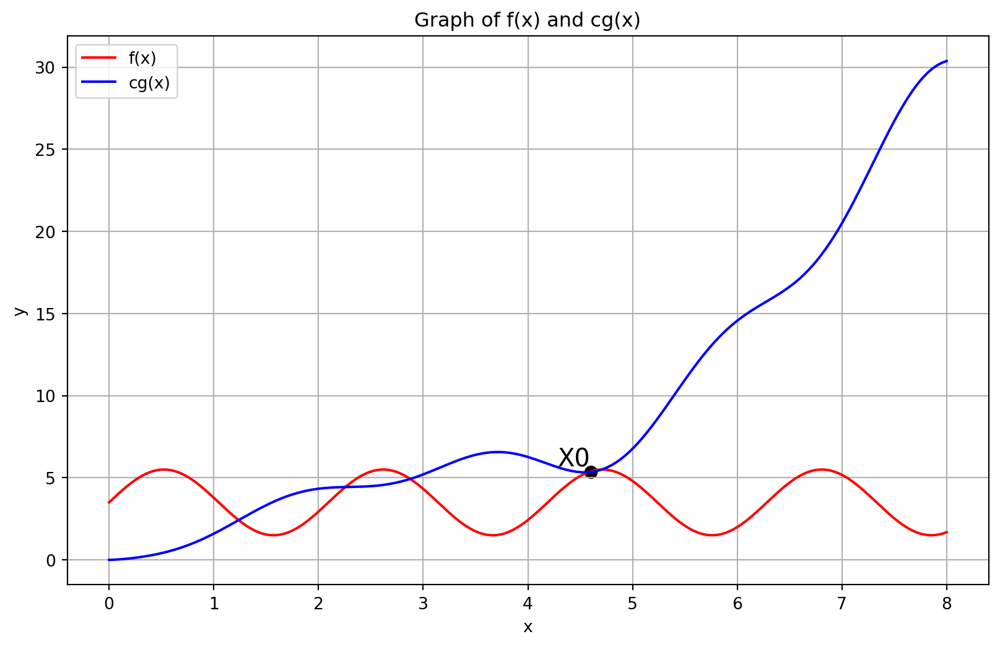

Analysis of Algorithms
Measuring performance of algorithms
- Two main factors to consider when measuring the performance of an algorithm are:
- Running time - how long does the algorithm take to run?
- Space requirements - how much memory does the algorithm use?
- Time depends on the processing power, which is impossible to change for the given hardware. Also, enhancements in the hardware has very limited impact at a practical level.
- Storage space is limited by the amount of memory available on the machine. This is easier to upgrade than processing power, but still has limitations.
- Therefore, when measuring the performance of an algorithm, we focus on the time rather than space.
Measuring running time
Analysis should be independent of the hardware and software environment.
Running time is measured in terms of the number of basic operations performed by the algorithm.
Typical basic operations include:
- Assign a value to a variable -
a = 5 - Compare two values -
if a > b
- Assign a value to a variable -
Exchange a pair of values?
(x,y)=(y,x)t=xx=yy=t- If we ignore constants, focus on orders of magnitude, both are within a factor of 3. Therefore, we can consider them as a single basic operation.
- We do not need to be extremely precise about defining basic operations.
- If we ignore constants, focus on orders of magnitude, both are within a factor of 3. Therefore, we can consider them as a single basic operation.
Input size
- The time taken by an algorithm to run is dependent on the size of the input data.
- Measure time efficiency as a function of the input size
- Input size n
- Running time t(n)
- Different algorithms may have different time complexities for the same input size.
- For example, if we are arranging a given list of numbers in ascending order, and the list is already sorted, the time taken by the algorithm will be less than if the list is in descending order.
What is the input size for an algorithm?
- Typically, the input size is the number of elements in the input data.
- For numerical algorithms, the input size is the number of digits in the input data.
- Same as \log_{b}n where b is the base of the number system.
Which input size to consider?
- Ideally, we want an input that is representative of the typical data that the algorithm will process, and that will give us a good idea of the algorithm’s average performance.
- However, “average” is difficult to define and compute.
- Average over what? All possible inputs? All possible distributions of inputs? - Not practical.
- Therefore, we often consider the worst-case input size.
- It is the input which forces the algorithm to take the longest time.
- It is easier to compute than the average case.
- Upper bound for worst-case input guarantees good performance for all inputs.
Orders of magnitude
- When comparing t(n), focus on the order of magnitude
- Ignore constants factors.
- Focus on the asymptotic complexity of the algorithm
- How does the running time grow as the input size increases?
- What happens in the limit as n becomes large/approaches infinity?
- Typical growth functions
- Is t(n) proportional to \log n, …, n^2, n^3, …, 2^n?
- Note: \log n means \log_{2}n by default.
- Is t(n) proportional to \log n, …, n^2, n^3, …, 2^n?
| Input size | \log n | n | n \log n | n^2 | n^3 | 2^n | n! |
|---|---|---|---|---|---|---|---|
| 10 | 3.3 | 10 | 33 | 100 | 1000 | 1000 | 10^6 |
| 100 | 6.6 | 100 | 660 | 10^4 | 10^6 | 10^{30} | 10^{157} |
| 1000 | 10 | 1000 | 10^4 | 10^6 | 10^9 | - | - |
| 10^4 | 13 | 10^4 | 10^5 | 10^8 | 10^{12} | - | - |
| 10^5 | 17 | 10^5 | 10^6 | 10^{10} | - | - | - |
| 10^6 | 20 | 10^6 | 10^7 | 10^{12} | - | - | - |
| 10^7 | 23 | 10^7 | 10^8 | - | - | - | - |
| 10^8 | 27 | 10^8 | 10^9 | - | - | - | - |
| 10^9 | 30 | 10^9 | 10^{10} | - | - | - | - |
| 10^{10} | 33 | 10^{10} | 10^{11} | - | - | - | - |
The table above shows the growth of different functions as the input size increases.
How do we compare functions with respect to orders of magnitude?
Upper bounds
- f(x) is said to be O(g(x)) if we can find constants c and x_0 such that c \cdot g(x) is an upper bound for f(x) for x beyond x_0
- f(x) \leq cg(x) for every x \geq x_0
Examples
100n+5 is O(n^2)
- 100n+5 \leq 100n+n=101n, for n \geq 5
- 101n \leq 101n^2
- Choose n_0=5 and c=101
Alternatively
- 100n+5 \leq 100n +5n =105n, for n \geq 1
- 105n \leq 105n^2
- Choose n_0=1 and c=105
Choice of c and n_0 is not unique
100n^2 + 20n +5 is O(n^2)
- 100n^2 + 20n +5 \leq 100n^2 + 20n^2 +5n^2, for n \geq 1
- 100n^2 + 20n^2 +5n^2 \leq 125n^2, for n \geq 1
- Choose n_0=1 and c=125
What matters is the highest term
- 20n+5 is dominated by 100n^2
n^3 is not O(n^2)
- No matter what c we choose, cn^2 will be dominated by n^3 for n \geq c
Useful properties of O notation
- If f_{1}(n) is O(g_{1}(n)) and f_{2}(n) is O(g_{2}(n)), then f_{1}(n)+f_{2}(n) is O(\max(g_{1}(n),g_{2}(n)))
- Proof
- f_{1}(n) \leq c_{1}g_{1}(n) for n \geq n_{1}
- f_{2}(n) \leq c_{2}g_{2}(n) for n \geq n_{2}
- Let c_{3} = \max(c_{1},c_{2}), n_{3} = \max(n_{1},n_{2})
- For n \geq n_{3}, f_{1}(n)+f_{2}(n)
- \leq c_{1}g_{1}(n)+c_{2}g_{2}(n)
- \leq c_{3}g_{1}(n)+c_{3}g_{2}(n)
- \leq 2c_{3}(\max(g_{1}(n),g_{2}(n)))
- Algorithm has two phases
- Phase A takes time O(g_{A}(n))
- Phase B takes time O(g_{B}(n))
- Algorithm as a whole takes time \max(O(g_{A}(n),g_{B}(n)))
- Least efficient phase is the upper bound for the whole algorithm
Lower bounds
- f(x) is said to be \Omega(g(x)) if we can find constants c and x_0 such that c \cdot g(x) is a lower bound for f(x) for x beyond x_0
- f(x) \geq cg(x) for every x \geq x_0
- n^3 is \Omega(n^2)
- n^3 > n^2 for all n, so n_0=1, c=1
- Typically we establish lower bounds for a problem rather than an individual algorithm
- If we sort a list by comparing elements and swapping them, we require \Omega(n \log n) comparisons
- This is independent of the sorting algorithm
Tight bounds
- f(x) is said to be \Theta(g(x)) if f(x) is both O(g(x)) and \Omega(g(x))
- Find constants c_1, c_2, x_0 such that c_{1}g(x) \leq f(x) \leq c_{2}g(x) for every x \geq x_0
- \frac{n(n-1)}{2} is \Theta(n^2)
- Upper bound
- \frac{n(n-1)}{2} = \frac{n^2}{2} - \frac{n}{2} \leq \frac{n^2}{2} for all n \geq 0
- Lower bound
- \frac{n(n-1)}{2} = \frac{n^2}{2} - \frac{n}{2} \geq \frac{n^2}{2} - (\frac{n}{2} \times \frac{n}{2}) \geq \frac{n^2}{4} for n \geq 2
- Choose n_0 = 2, c_1 = \frac{1}{4}, c_2 = \frac{1}{2}
- Upper bound
Calculating time complexity - Examples
Example 1 - Find the maximum element in a list
- Input size is the length of the list
- Single loop scans all elements
- Always takes n steps
- Overall time is O(n)
def maxElement(L):
maxval = L[0]
for i in range(len(L)):
if L[i] > maxval:
maxval = L[i]
return maxvalExample 2 - Check whether a list contains duplicates
- Input size is the length of the list
- Nested loop scans all pairs of elements
- A duplicate may be found in the very first iteration
- Worst case - no duplicates, both loops run fully
- Time is (n-1)+(n-2)+...+1=\frac{n(n-1)}{2}
- Overall time is O(n^2)
def noDuplicates(L):
for i in range(len(L)):
for j in range(i+1, len(L)):
if L[i] == L[j]:
return False
return TrueExample 3 - Matrix multiplication
- Matrix is represented as a list of lists
- \begin{pmatrix}1 & 2 & 3\\4 & 5 & 6\end{pmatrix}
[[1, 2, 3], [4, 5, 6]]
- Input matrices have size m \times n, n \times p
- Output matrix is m \times p
- Three nested loops
- Overall time is O(mnp) - O(n^3) if both are n \times n
def matrixMultiply(A, B):
(m, n, p) = (len(A), len(B), len(B[0]))
C = [[0 for i in range(p)]
for j in range(m)]
for i in range(m):
for j in range(p):
for k in range(n):
C[i][j] = C[i][j] + A[i][k] * B[k][j]
return CExample 4 - Number of bits in binary representation of a number
- \log n steps for n to reach 1
- For number theoretic problems, input size is number of digits
- This algorithm is linear in input size
def numberOfBits(n):
count = 1
while n > 1:
count += 1
n = n // 2
return countExample 5 - Towers of Hanoi
- Three pegs A, B, C
- Move n disks from A to B, use C as transit peg
- Never place a larger disk on a smaller one
- Recursive solution
- Move n-1 disks from A to C, use B as transit peg
- Move the largest disk from A to B
- Move n-1 disks from C to B, use A as transit peg
- Recurrence
- M(n) - number of moves to transfer n disks
- M(1) = 1
- M(n) = M(n-1) + 1 + M(n-1) = 2M(n-1)+1
- Unwind and solve \begin{aligned} M(n) & =\ 2M( n-1) +1\\ & =\ 2( 2M( n-2) +1) +1=\ 2^{2} M( n-2) +( 2+1)\\ & =\ 2^{2}( 2M( n-3) +1) +( 2+1) =\ 2^{3} M( n-3) \ +\ ( 4+2+1)\\ & \dotsc \\ & =\ 2^{k} M( n-k) +\left( 2^{k} -1\right)\\ & \dotsc \\ & =\ 2^{n-1} M( 1) +\left( 2^{n-1} -1\right)\\ & =\ 2^{n-1} +2^{n-1} -1\\ & =\ 2^{n} -1 \end{aligned}